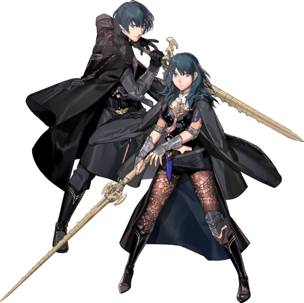
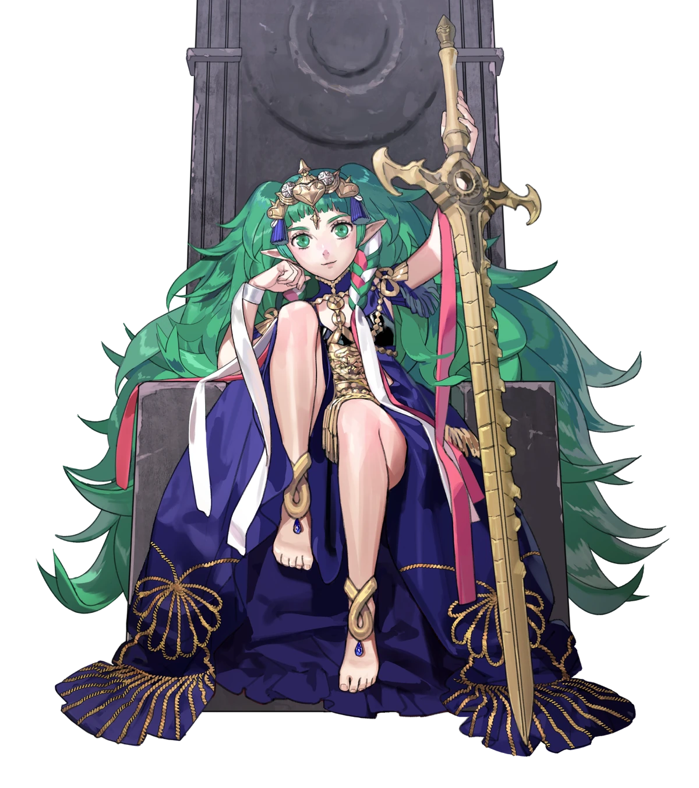
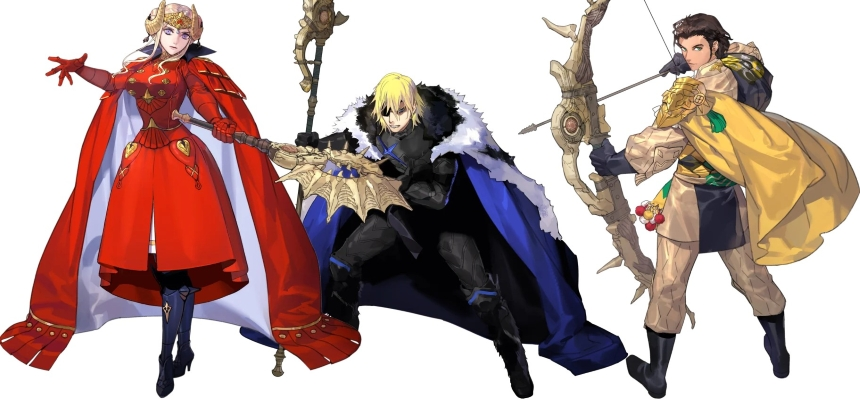

Byleth is a Mercenary often nicknamed "The Ashen Demon." due to their ruthless strength. They have been this way since they were born, and works aside their father, Jeralt. They have a indifferent perosnality but throughout Three Houses, they slowly learn how to express themselves.

(Because Fortunes Weave it out, her true idenity isn't really a surpise. But, I won't reveal it). Sothis is in a weird situation. She the girl that resides within Byleths mind since Byleth was born. She sometimes acts as a guide for Byleth and even gave them the power to reverse time, limited of course. Sothis has zero memory of herself nor who she even is, depsite that, she can sense familiarity towards certain areas and people. Throughout Part I of the story, Sothis slowly regains her memory of who she was.
The story starts with Byleth and Sothis interacting for the first time. As soon as Byleth wakes up, they have to help three nobles along with their father who are getting chased by bandits. After defeating them, It is revealed that the Three Nobles (Claude, Edelgard, and Drimitri) are students of the Officers Acadamy which is affilicated by the Church of Serios. Jeralt used to work for the church and is convivced by one of the members to go back with them along with the students. It's there they meet the Archbishop of the Church, Rhea, who has taken an interest in Byleth. As a result of Byleth's work, they become the next Professor of one of the Three Houses.
All Three routes have a similar plot for Part I; White Clouds. Each month, Archbishop Rhea tells Byleth what their class will be doing at the end of the month, and Byleth prepares for it. Sometimes, it will be something as simple as stopping bandits who invaded sacred land. You also will learn about the antigonist, a mysteroius group known as Those Who Slither in The Dark and the mysteroius Death Knight.
Five years as gone by and all of Fodlan is consumed by war with all polictical powers agnist each other. With Edelgard as Emporor, Dimitri as King, and Claude as the leader of the Alliacne. Byleth, their students, and the now leader will now work to put the end to the war. Though, war comes with casualties and the students might go aginst their formal peers...
In part II, all units also get new outfits that reflect on what they've been doing for the last half decade. Addtionally, This is where the story gets emontional. The rest of the story depends on the house you've chosen at the start.

Fire Emblem is owned by © Nintendo